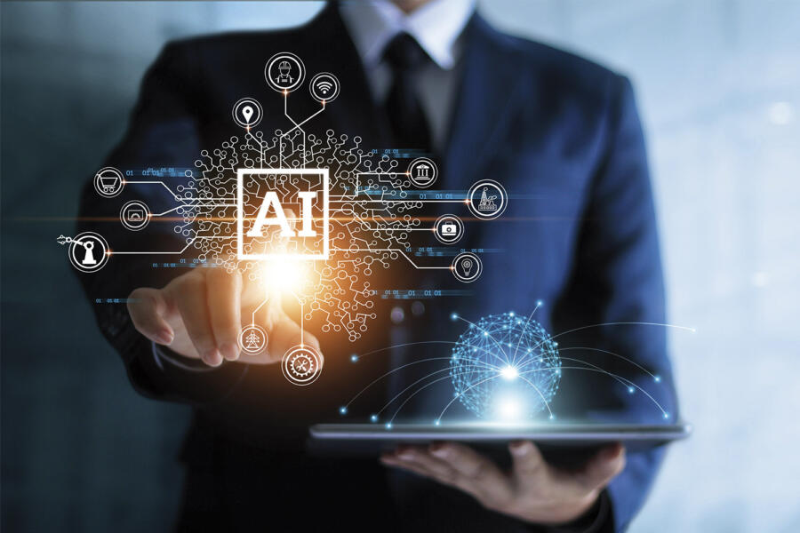
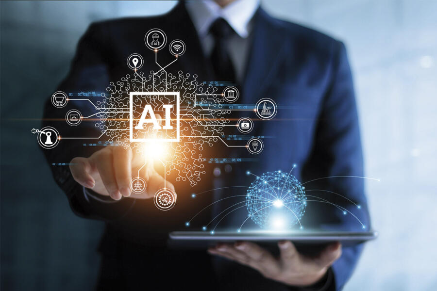

HOLA!!
Mi nombre es Christian David Suarez Mendoza
Tengo 19 años
Naci en Barranquilla, Atlantico pero vivo
en Soledad, Atlantico
Estudio en la Corporacion Universidad
de la Costa como Ingeniero de Sistemas
 ¿Que es una Inteligencia Artificial?

¿Que es una Inteligencia Artificial?

La inteligencia artificial (IA) se ha convertido en una parte integral de nuestras vidas, desde los motores de búsqueda que utilizamos hasta los sistemas de recomendación en plataformas de streaming y las aplicaciones de asistentes virtuales. Sin embargo, a medida que la IA avanza, también surgen cuestiones éticas y morales que debemos considerar.
Automatización y Empleo: La implementación creciente de la IA en diversas industrias plantea preguntas sobre la pérdida de empleos humanos. ¿Cómo podemos equilibrar la automatización con la necesidad de mantener oportunidades laborales?
Bias y Discriminación: Los algoritmos de IA pueden heredar sesgos de los datos con los que son entrenados, lo que puede llevar a resultados discriminatorios. Es fundamental abordar estos sesgos para garantizar la equidad y la justicia.
Privacidad de los Datos: La recopilación y el uso de datos personales plantean preocupaciones sobre la privacidad y la seguridad. ¿Cómo podemos garantizar que la IA respete los derechos de privacidad de las personas?
Responsabilidad y Toma de Decisiones: A medida que la IA toma decisiones en áreas como la atención médica y la justicia, surge la pregunta de quién es responsable en caso de errores. ¿Cómo establecemos responsabilidades claras?
Superinteligencia Artificial: Se debate si es posible que la IA alcance un nivel de inteligencia superior al humano. Esto plantea interrogantes sobre cómo controlar y regular una inteligencia que podría superarnos.
Relación Humano-Máquina: ¿Cómo afectará la interacción cada vez más frecuente con sistemas de IA a nuestra propia identidad y a las relaciones humanas?
Transparencia y Explicabilidad: A medida que las decisiones basadas en IA se vuelven más influyentes en nuestra vida, es esencial comprender cómo se llega a esas decisiones. La capacidad de explicar el razonamiento detrás de las decisiones de la IA es crucial.
Regulación y Normativas: Los gobiernos y las organizaciones están trabajando en la creación de regulaciones y normativas para guiar el desarrollo y uso de la IA de manera ética.